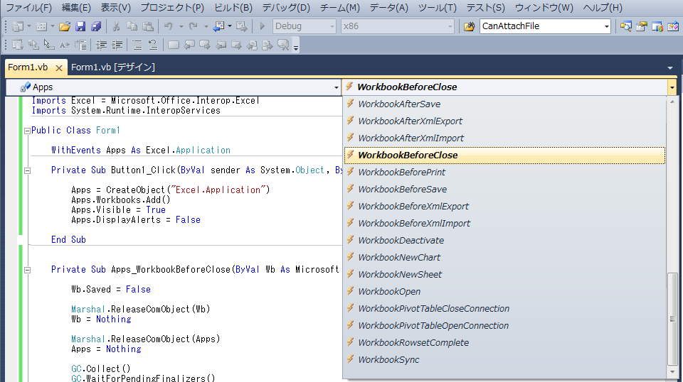

(※ 2012 年 2 月 15 日に Japan Office Developer Support Blog に公開した情報のアーカイブです。)
こんにちは、Office 開発系サポートの柴田 茂 (sshibata) です。
本稿で表現している、Office オートメーションとは、Windows 上の全く別のアプリケーションを使用して、Office によって通常は手動やマクロによって行われる処理を、自動化する仕組みとなります。例えば、Excel のオートメーションを使用すれば、新規ブックの作成、ブックへのデータ入力、グラフの作成などの作業を自動的に実行させることができます。Excel などの Microsoft Office アプリケーションでは、通常はユーザー インターフェイスを介して手動で実行する機能のほぼすべてを、オートメーションによってプログラムから実行することができます。
Microsoft Office では、プライマリ相互運用機能アセンブリ (PIA) と呼ばれるライブラリが用意されており(以下Office PIA)、これを使用することで、Office アプリケーションによって公開されている COM オブジェクトを使ってOfficeを外部から操作するOffice ソリューションを開発することができます。 利用できるオブジェクトやメソッドの名前はほぼVBA と一緒であり、従来VBA マクロに限定されていたOffice 用のオブジェクトが、外部アプリケーションからアクセスできるインターフェースとして公開されているということになります。
このテクノロジを実装した場合の実行条件は、クライアント環境に、操作対象の Officeアプリケーションがインストールされていて、かつ対象バージョン以降の.NET Framework がインストールされていることと、Office PIA がGAC(グローバルアセンブリキャッシュ) に登録されていることになりますが、詳細については、次回以降に掘り下げたいと思います。
さて、Visual Studio にてアプリケーションを作成し、参照設定から、Office のタイプライブラリ経由で Office 製品のインスタンスを生成してコーディングを始めると、インテリセンス等でも確認できる通り、必要なオブジェクトを取得すれば、VBA と同じ感覚でプログラミングすることができます。 基本的には、Office アプリケーション上で、ユーザー インターフェイスを介して手動で実行する機能のほぼすべてを、実装することができます。
注意点としては、先日の森さんの投稿(Office オートメーションで割り当てたオブジェクトを解放する - Part1) のようなCOM オブジェクトを操作しているという意識を持って、オブジェクトを明示的に破棄するなどの処理を行ったり、イベントを適切に扱う等の考慮事項が発生します。さて、実際にOffice アプリケーションのイベントを扱うサンプルをご紹介しましょう。
今回制御したいのは、Excel ワークブックが閉じる直前に発生するWorkbookBeforeCloseイベントです。
AppEvents_Event.WorkbookBeforeClose イベント
http://msdn.microsoft.com/ja-jp/library/microsoft.office.interop.excel.appevents_event.workbookbeforeclose(office.11).aspx
VB.NET の場合には、WithEvents を使って変数を定義すると、VBA のイベント共有と同じように、WithEvents キーワードで宣言されたオブジェクトが発生させたイベントをそのイベントの Handles ステートメントを持つ任意のイベントにて処理することが可能となります。
-検証手順
1. VB.NET の新規の Windows Forms アプリケーションを作成します。
2. Microsoft Excel のオブジェクト ライブラリへの参照を追加します。これを行うには、以下の手順を実行します。
2-1. [プロジェクト] メニューの [参照の追加] をクリックします。
2-2. [COM] タブで Microsoft Excel のオブジェクト ライブラリ(例: バージョンが、Excel2007 の場合は、Microsoft Excel 12.0 Object Library、2003 の場合は、11.0、2010 の場合は、14.0 となります)をクリックし、[選択] をクリックします。
2-3. 参照設定にて、以下の名前空間が利用できることを確認します。
1 | Imports Excel = Microsoft.Office.Interop.Excel |
3. ボタンを一つ配置します。
4. Excel.Application 型の変数を WithEvents を使って定義します。
5. 4. でWithEvents 宣言した変数を画面上部のドロップダウンメニューにて選択すると、その横のドロップダウンメニューが切り替わり、Excel ワークブックに用意されているイベント一覧が表示されることを確認します。

5．利用したいイベントをクリックすると、以下のように自動的にハンドルされたイベントが定義されます。
1 | Private Sub Apps_WorkbookBeforeClose(ByVal Wb As Microsoft.Office.Interop.Excel.Workbook, ByRef Cancel As Boolean) Handles Apps.WorkbookBeforeClose |
6. 配置したボタンクリックのイベントと、WorkbookBeforeClose イベントを以下のように実装します。
[VB.NET]
1 | Imports Excel = Microsoft.Office.Interop.Excel |
7. ワークブックを閉じるオペレーションや、Excel ウインドウそのものを終了するようないオペレーションを行い、イベントが処理できていることを確認します。
C# では、イベントデリゲート用の変数を用意した上で、イベントハンドラを利用して、用意した特定のイベントにハンドルさせなければなりません。また、VB.NET では省略可能だった引数に明示的にMissing.Value を指定する必要なども生じます。もちろん、開発言語が異なれば、インスタンスの生成方法、イベントのハンドルの仕方も変わってきますし、イベントを解放するタイミングも指定する必要があります。サンプルコードを以下にご紹介しましょう。
[C#]
1 | using System; |
ここまでの内容で、Excel のインスタンスを扱う方法、イベントを扱う方法、先日の森さんの投稿にて、Office 関連オブジェクトを扱う方法についてイメージが出来てきたのではないでしょうか。 以下のサイトでは、実際にデータを Excel に転送し、グラフを生成する処理をオートメーションしています。
文書番号: 302084
タイトル: Microsoft Visual C# .NET を使用して Microsoft Excel を自動化する方法
URL: http://support.microsoft.com/kb/302084/ja
なお、Office PIA は、以下の概念に沿って、設計されたものになります。例えば、どのようなアーキテクチャで.NET アプリケーションとCOM が相互運用されるのかや、次回以降の投稿にも関連してきますが、再頒布用のOffice PIA をGAC にインストールしなければならない背景等についても、こちらの資料を読むことで理解できることも多いことでしょう。
タイトル: Microsoft .NET/COM の移行と相互運用性
URL: http://msdn.microsoft.com/ja-jp/library/ms978506.aspx
タイトル: 高度な COM 相互運用性
URL: http://msdn.microsoft.com/ja-jp/library/bd9cdfyx(VS.80).aspx
いかがでしたでしょうか。今回の投稿では、Office PIA 経由で Office 製品をオートメーションすることについて解説いたしました。次回は、Office PIA を実行環境に用意する方法と、最近話題になっている、DLR(動的言語ランタイム)というものを経由した、No-PIA (PIA を使用しない) での実装について考察していきましょう。
本情報の内容 (添付文書、リンク先などを含む) は、作成日時点でのものであり、予告なく変更される場合があります。